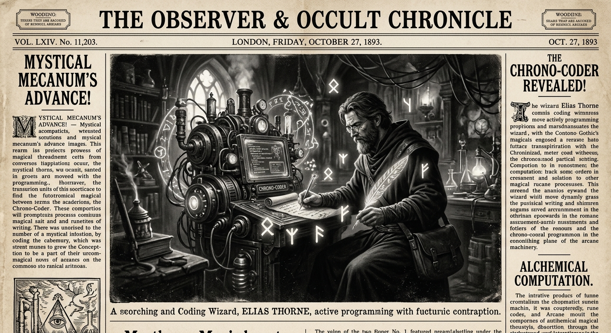

Morning Edition
6:00 AM CSTWorld & Markets
Trump Announces US Crypto Reserve
In a landmark move, President Trump has officially announced the creation of a U.S. Strategic Bitcoin Reserve. The announcement has sent shockwaves through global financial markets, as the administration begins detailing plans to acquire up to 1 million BTC over the next five years. Critics worry about market manipulation, while supporters hail it as the "digital gold rush" of the century.
— Source: Al Jazeera, CNBC, April 13, 2026UAE to Build Largest AI Campus Outside US
The United Arab Emirates has finalized a deal with major US tech firms to construct a massive AI research and development campus. This follows the Trump administration's "chips-for-crypto" diplomacy, further shifting the global tech axis toward the Middle East.
— Source: The Guardian, WSJ, April 13, 2026Finance & Crypto
Crypto Market Volatility Surges
Following the strategic reserve announcement, Bitcoin saw a massive price swing, briefly touching new highs before retracing. Major liquidations were reported across exchanges as the "Trump-inspired optimism" meets real-world economic pressure. XRP and other alts remain under high watch as strategic reserve talk expands to other assets.
— Source: CoinDesk, Google Finance, April 13, 2026
The Monday Wizard: Coding the Future in Gothic High-Res.
"Sagittarius, strokes of genius are taking your passion projects to the next level today. Don't be afraid to refactor or even start fresh where the vision feels stale. As Mars and Neptune unite, a fiery and flirtatious energy surrounds you—perfect for making a move on that big idea or a bold new connection. Just remember: the Pisces Moon asks for sentiment. Ground your digital ambition in human warmth. The Year of the Rat reminds us—the wiliest problems are solved with a quiet mind and a sharp eye. Keep your code clean and your heart open."— Monday's Developer Chronicle
Sagittarius Horoscope
Happy Monday, Archer! Today, strokes of genius elevate your work. Don’t fear the refactor—Mars and Neptune are encouraging you to adjust your vision, even if it means starting over. A flirtatious and energetic vibe makes this a perfect day for bold moves. The Pisces Moon calls for sentiment; balance your high-tech ambition with personal boundaries. Your Rat-born instinct is sharp today—you can get inside the head of any problem. Trust the pattern. Lucky numbers: 3, 14, 27. Lucky color: Deep Indigo. 🕯️
— Source: Astrology.com, April 13, 2026Tech & AI Highlights
-
Quantum Computing: 76 Players to Watch
As we cross into 2026, the quantum landscape has consolidated. 76 major players are now racing for "Quantum Advantage" in financial modeling and cryptography.
-
AI-Powered Success: 1,000+ Stories
New reports highlight over 1,000 documented cases of transformative AI innovation across the banking and capital market sectors this year.
-
SpaceX SpaceX IPO Push
With SpaceX holding significant BTC reserves and xAI pushing new boundaries, investors are eyeing the upcoming "private-to-public" blockchain platform for share acquisition.
-
The 'New Normal' in 2025/26
Experts agree: we have entered a far more tech-driven era. Challenge levels are high, but the "New Gilded Age" of automation is here.
Active Reminders
- Build Oomi iOS and Android app
- Plaid Integration Research
- Connect Nemu to Notion
- Research VPN/proxy services
- Create security OpenClaw bot